Tracking Efficiency
theoretical_max <- 40
m.PCR.data <- subj_data %>%
select(Participant, Group, ResourceSpeed, SignalingType, PCS) %>%
mutate(PCS_0_1 = PCS / theoretical_max)PCS distribution by conditions
m.PCR.data %>%
ggplot(aes(x = PCS)) +
geom_histogram(binwidth = 2, fill = "lightblue", color = "black") +
facet_grid(rows = vars(ResourceSpeed), cols = vars(SignalingType)) +
theme_nice()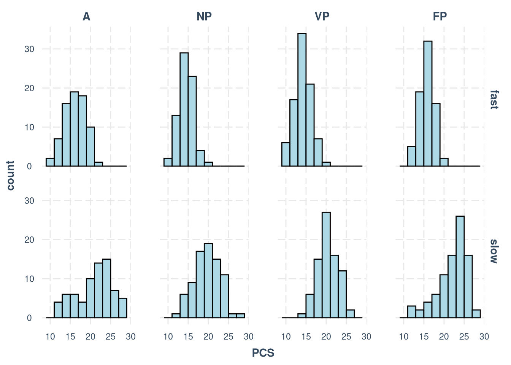
# Check if PCS can be exactly 0 or 40
m.PCR.data %>%
filter(PCS == 0 | PCS == theoretical_max) %>%
select(Participant, PCS, ResourceSpeed, SignalingType)Model 1
m.PCR.1.formula <- brmsformula(
PCS_0_1 ~ 1 + SignalingType * ResourceSpeed + (1 | Group),
family = Beta(link = "logit", link_phi = "log")
)
m.PCR.1.formula_comparison <- brmsformula(
PCS_0_1 ~ 1 + SignalingType * ResourceSpeed
)
m.PCR.1.priors <-
prior(normal(0, 0.5), class = b) +
prior(normal(0, 1), class = Intercept) +
prior(normal(2, 1), class = phi, lb = 0) +
prior(normal(0, 1), class = sd, lb = 0)Prior predictive checks
m.PCR.1.fit_prior <- brm(
formula = m.PCR.1.formula,
data = m.PCR.data,
prior = m.PCR.1.priors,
chains = 4,
cores = 4,
seed = 42,
iter = 2000,
file = paste0(fits_path, 'pcr_1_prior.rds'),
sample_prior = "only",
backend = "cmdstanr",
threads = threading(100),
control = list(adapt_delta = 0.95),
save_pars = save_pars(all = TRUE))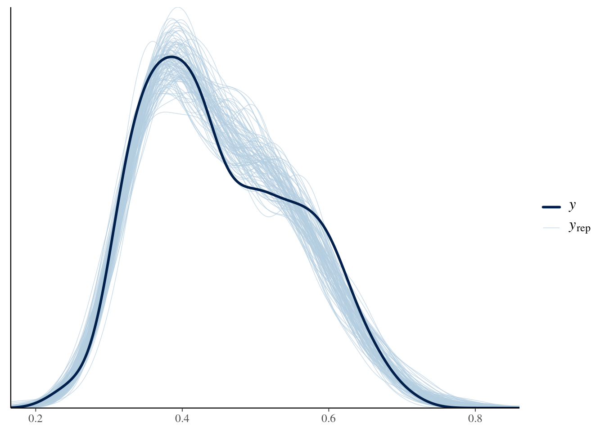
## Family: beta
## Links: mu = logit; phi = identity
## Formula: PCS_0_1 ~ 1 + SignalingType * ResourceSpeed + (1 | Group)
## Data: m.PCR.data (Number of observations: 621)
## Draws: 4 chains, each with iter = 2000; warmup = 1000; thin = 1;
## total post-warmup draws = 4000
##
## Multilevel Hyperparameters:
## ~Group (Number of levels: 247)
## Estimate Est.Error l-95% CI u-95% CI Rhat Bulk_ESS Tail_ESS
## sd(Intercept) 0.81 0.61 0.03 2.27 1.00 2689 1541
##
## Regression Coefficients:
## Estimate Est.Error l-95% CI u-95% CI Rhat Bulk_ESS Tail_ESS
## Intercept -0.03 1.07 -2.10 2.00 1.00 9375 3250
## SignalingTypeNP -0.00 0.50 -0.98 0.95 1.00 6094 2949
## SignalingTypeVP -0.00 0.51 -0.97 0.98 1.00 7254 2724
## SignalingTypeFP 0.00 0.48 -0.95 0.94 1.00 7907 2798
## ResourceSpeedslow -0.00 0.49 -0.95 0.95 1.00 6907 2629
## SignalingTypeNP:ResourceSpeedslow 0.01 0.49 -0.92 0.95 1.00 7112 3016
## SignalingTypeVP:ResourceSpeedslow -0.01 0.50 -1.00 0.95 1.00 7115 2901
## SignalingTypeFP:ResourceSpeedslow 0.00 0.50 -0.97 0.97 1.00 7420 2709
##
## Further Distributional Parameters:
## Estimate Est.Error l-95% CI u-95% CI Rhat Bulk_ESS Tail_ESS
## phi 2.06 0.94 0.34 3.94 1.00 2856 1397
##
## Draws were sampled using sample(hmc). For each parameter, Bulk_ESS
## and Tail_ESS are effective sample size measures, and Rhat is the potential
## scale reduction factor on split chains (at convergence, Rhat = 1).Model fitting
m.PCR.1.fit <- brm(
formula = m.PCR.1.formula,
data = m.PCR.data,
prior = m.PCR.1.priors,
chains = 7,
cores = 7,
seed = 42,
iter = 20000,
file = paste0(fits_path, 'pcr_1.rds'),
backend = "cmdstanr",
threads = threading(100),
control = list(adapt_delta = 0.95),
save_pars = save_pars(all = TRUE)
)## Family: beta
## Links: mu = logit; phi = identity
## Formula: PCS_0_1 ~ 1 + SignalingType * ResourceSpeed + (1 | Group)
## Data: m.PCR.data (Number of observations: 621)
## Draws: 7 chains, each with iter = 20000; warmup = 10000; thin = 1;
## total post-warmup draws = 70000
##
## Multilevel Hyperparameters:
## ~Group (Number of levels: 247)
## Estimate Est.Error l-95% CI u-95% CI Rhat Bulk_ESS Tail_ESS
## sd(Intercept) 0.03 0.02 0.00 0.07 1.00 44768 36289
##
## Regression Coefficients:
## Estimate Est.Error l-95% CI u-95% CI Rhat Bulk_ESS Tail_ESS
## Intercept -0.38 0.06 -0.49 -0.27 1.00 55301 56556
## SignalingTypeNP -0.15 0.08 -0.31 0.01 1.00 68325 57564
## SignalingTypeVP -0.18 0.08 -0.33 -0.03 1.00 67324 59737
## SignalingTypeFP -0.03 0.08 -0.19 0.13 1.00 64695 56519
## ResourceSpeedslow 0.47 0.08 0.32 0.63 1.00 49826 54319
## SignalingTypeNP:ResourceSpeedslow 0.02 0.11 -0.19 0.24 1.00 60986 57926
## SignalingTypeVP:ResourceSpeedslow 0.12 0.11 -0.10 0.33 1.00 60422 57596
## SignalingTypeFP:ResourceSpeedslow 0.13 0.11 -0.08 0.35 1.00 58708 56643
##
## Further Distributional Parameters:
## Estimate Est.Error l-95% CI u-95% CI Rhat Bulk_ESS Tail_ESS
## phi 15.61 0.66 14.33 16.91 1.00 177705 47876
##
## Draws were sampled using sample(hmc). For each parameter, Bulk_ESS
## and Tail_ESS are effective sample size measures, and Rhat is the potential
## scale reduction factor on split chains (at convergence, Rhat = 1).Model diagnostics
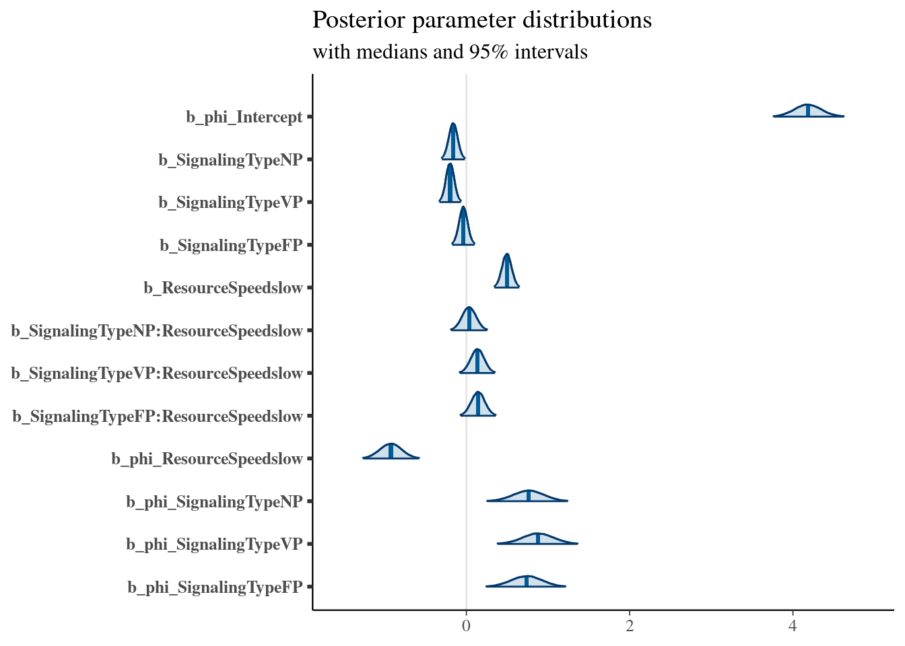
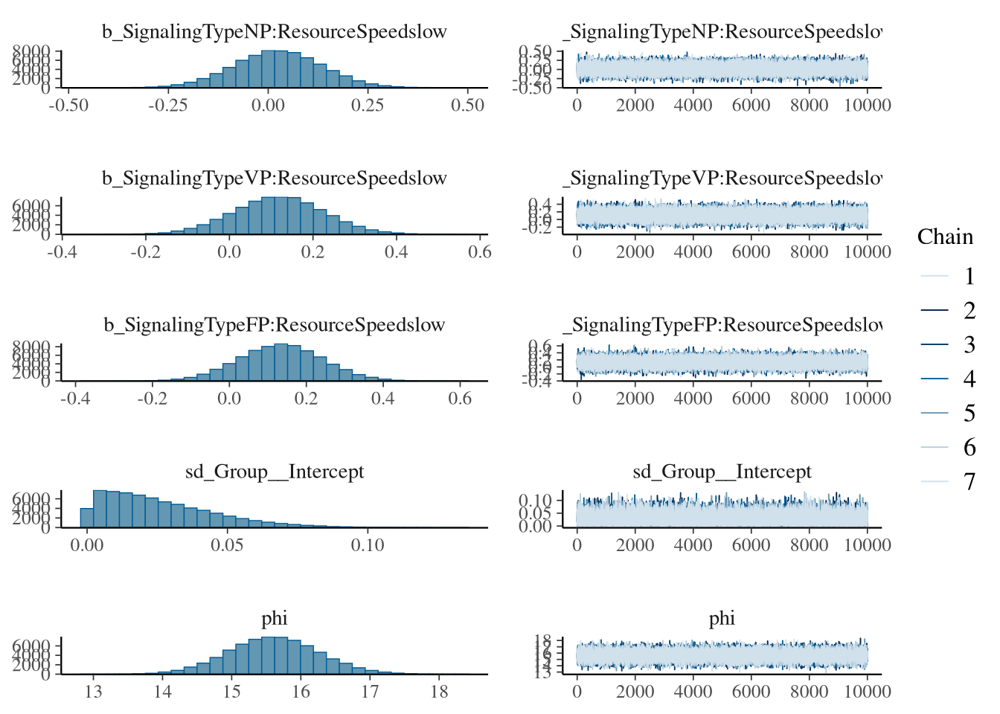
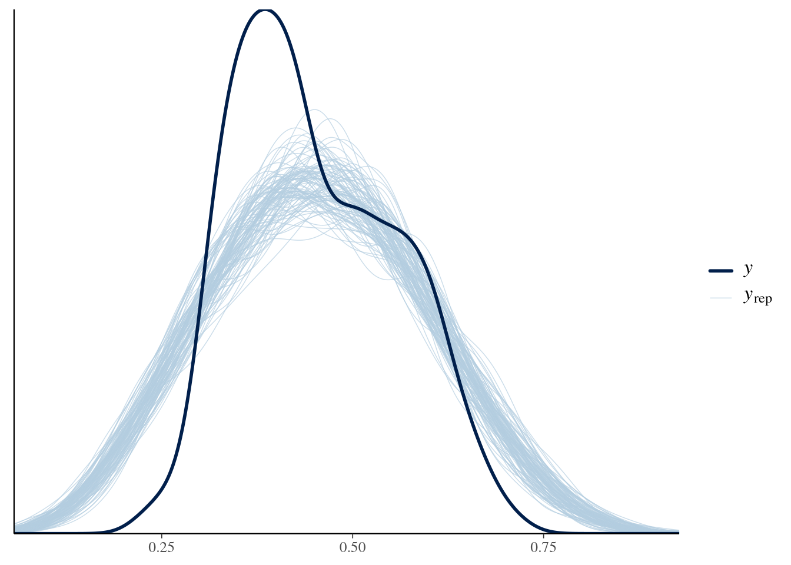
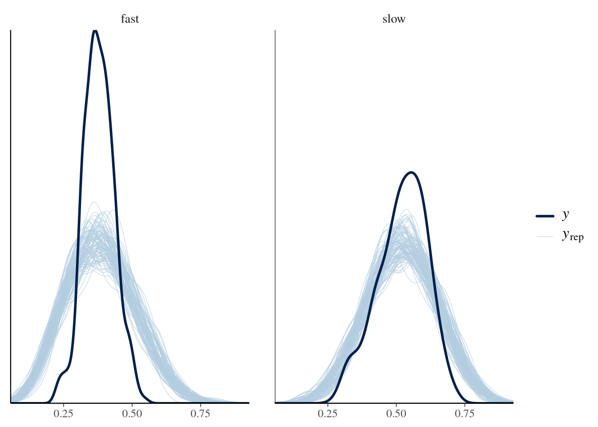
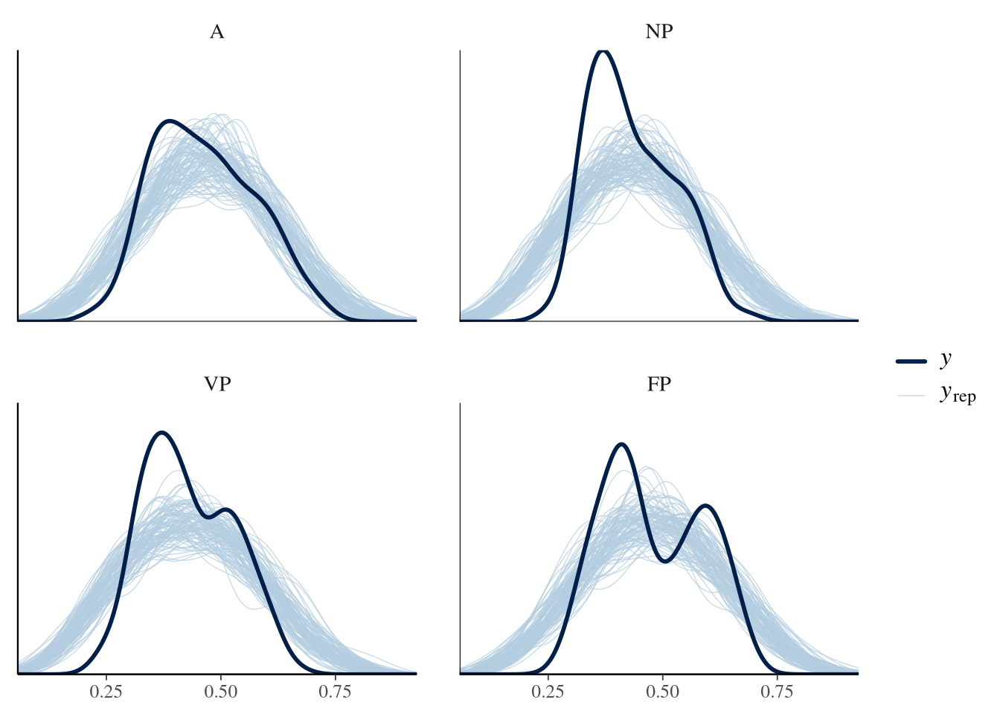
group <- m.PCR.data$SignalingType
mask <- m.PCR.data$ResourceSpeed == 'fast'
ppc_dens_overlay_grouped(m.PCR.1.y[mask],
m.PCR.1.yrep[1:50, mask],
group = group[mask])group <- m.PCR.data$SignalingType
mask <- m.PCR.data$ResourceSpeed == 'slow'
ppc_dens_overlay_grouped(m.PCR.1.y[mask],
m.PCR.1.yrep[1:50, mask],
group = group[mask])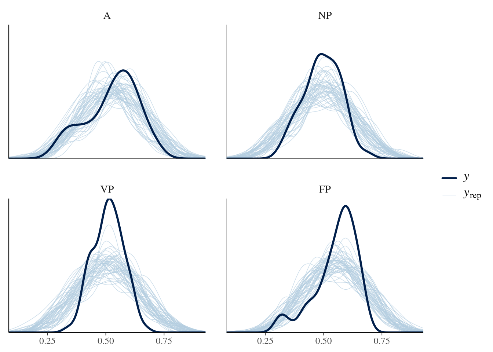
Condition comparisons
m.PCR.1.emmeans_contrast_draws.1 <- m.PCR.1.fit %>%
emmeans(~ SignalingType * ResourceSpeed, epred = TRUE, type = "response", re_formula = m.PCR.1.formula_comparison) %>%
contrast(method = "revpairwise", simple = "each", combine = TRUE) %>%
gather_emmeans_draws() %>%
mutate(.value = .value * theoretical_max)m.PCR.1.comparison.1 <- m.PCR.1.emmeans_contrast_draws.1 %>%
ggdist::mean_hdci(.width = 0.9) %>%
mutate(.value = round(.value, 2), .lower = round(.lower, 2), .upper = round(.upper, 2))
m.PCR.1.comparison.1 %>%
knitr::kable("html", digits = 2) %>% kable_classic(full_width = T, position = "center", )| ResourceSpeed | SignalingType | contrast | .value | .lower | .upper | .width | .point | .interval |
|---|---|---|---|---|---|---|---|---|
| . | A | slow - fast | 4.69 | 3.43 | 5.95 | 0.9 | mean | hdci |
| . | FP | slow - fast | 6.01 | 4.76 | 7.26 | 0.9 | mean | hdci |
| . | NP | slow - fast | 4.86 | 3.60 | 6.16 | 0.9 | mean | hdci |
| . | VP | slow - fast | 5.77 | 4.54 | 7.00 | 0.9 | mean | hdci |
| fast | . | FP - A | -0.29 | -1.54 | 0.96 | 0.9 | mean | hdci |
| fast | . | FP - NP | 1.11 | -0.19 | 2.40 | 0.9 | mean | hdci |
| fast | . | FP - VP | 1.42 | 0.20 | 2.67 | 0.9 | mean | hdci |
| fast | . | NP - A | -1.40 | -2.67 | -0.14 | 0.9 | mean | hdci |
| fast | . | VP - A | -1.71 | -2.90 | -0.50 | 0.9 | mean | hdci |
| fast | . | VP - NP | -0.31 | -1.58 | 0.92 | 0.9 | mean | hdci |
| slow | . | FP - A | 1.03 | -0.24 | 2.31 | 0.9 | mean | hdci |
| slow | . | FP - NP | 2.26 | 1.01 | 3.51 | 0.9 | mean | hdci |
| slow | . | FP - VP | 1.66 | 0.40 | 2.91 | 0.9 | mean | hdci |
| slow | . | NP - A | -1.23 | -2.53 | 0.06 | 0.9 | mean | hdci |
| slow | . | VP - A | -0.63 | -1.94 | 0.66 | 0.9 | mean | hdci |
| slow | . | VP - NP | 0.61 | -0.68 | 1.88 | 0.9 | mean | hdci |
m.PCR.1.emmeans_contrast_draws.1 %>%
filter(ResourceSpeed != '.') %>%
rename(prediction = .value) %>%
ggplot(
aes(y = contrast,
x = prediction,
color = ResourceSpeed, shape = ResourceSpeed, fill = ResourceSpeed)) +
facet_grid(rows = vars(ResourceSpeed)) +
stat_pointinterval(.width = 0.9) +
scale_color_manual(values = get_colors("Qual2", num.colors = 2, reverse = TRUE, gradient = FALSE)) +
scale_fill_manual(values = get_colors("Qual2", num.colors = 2, reverse = TRUE, gradient = FALSE)) +
scale_shape_manual(values = c(21, 24)) +
labs(x = 'Prediction PCS') +
theme_nice()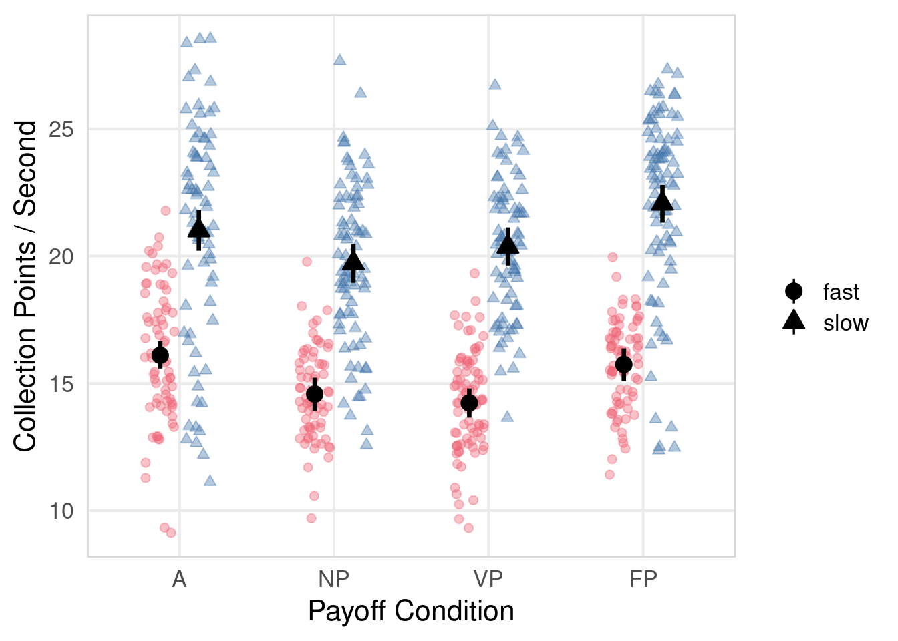
m.PCR.1.emmeans_contrast_draws.2 <- m.PCR.1.fit %>%
emmeans(~ ResourceSpeed, epred = TRUE, type = "response", re_formula = m.PCR.1.formula_comparison) %>%
contrast(method = "revpairwise", simple = "each", combine = TRUE) %>%
gather_emmeans_draws() %>%
mutate(.value = .value * theoretical_max)m.PCR.1.comparison.2 <- m.PCR.1.emmeans_contrast_draws.2 %>%
ggdist::mean_hdci(.width = 0.9) %>%
mutate(.value = round(.value, 2), .lower = round(.lower, 2), .upper = round(.upper, 2))
m.PCR.1.comparison.2 %>%
knitr::kable("html", digits = 2) %>% kable_classic(full_width = T, position = "center", )| contrast | .value | .lower | .upper | .width | .point | .interval |
|---|---|---|---|---|---|---|
| slow - fast | 5.33 | 4.69 | 5.98 | 0.9 | mean | hdci |
Model 2
m.PCR.2.formula <- brmsformula(
PCS_0_1 ~ 1 + SignalingType * ResourceSpeed + (1 | Group),
phi ~ ResourceSpeed + SignalingType,
family = Beta(link = "logit", link_phi = "log")
)
m.PCR.2.formula_comparison <- brmsformula(
PCS_0_1 ~ 1 + SignalingType * ResourceSpeed,
phi ~ ResourceSpeed + SignalingType
)
m.PCR.2.priors <-
prior(normal(0, 0.5), class = b) +
prior(normal(0, 1), class = Intercept) +
prior(gamma(4, 0.1), class = Intercept, dpar = phi, lb = 0) +
prior(normal(0, 1), class = b, dpar = phi) +
prior(normal(0, 1), class = sd, lb = 0)Prior predictive checks
m.PCR.2.fit_prior <- brm(
formula = m.PCR.2.formula,
data = m.PCR.data,
prior = m.PCR.2.priors,
chains = 4,
cores = 4,
seed = 42,
iter = 2000,
file = paste0(fits_path, 'pcr_2_prior.rds'),
sample_prior = "only",
backend = "cmdstanr",
threads = threading(100),
control = list(adapt_delta = 0.95),
save_pars = save_pars(all = TRUE))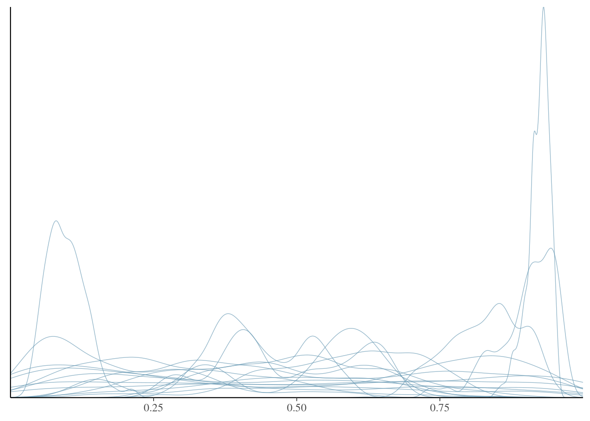
## Family: beta
## Links: mu = logit; phi = log
## Formula: PCS_0_1 ~ 1 + SignalingType * ResourceSpeed + (1 | Group)
## phi ~ ResourceSpeed + SignalingType
## Data: m.PCR.data (Number of observations: 621)
## Draws: 4 chains, each with iter = 2000; warmup = 1000; thin = 1;
## total post-warmup draws = 4000
##
## Multilevel Hyperparameters:
## ~Group (Number of levels: 247)
## Estimate Est.Error l-95% CI u-95% CI Rhat Bulk_ESS Tail_ESS
## sd(Intercept) 0.79 0.60 0.03 2.24 1.00 3113 1560
##
## Regression Coefficients:
## Estimate Est.Error l-95% CI u-95% CI Rhat Bulk_ESS Tail_ESS
## Intercept 0.01 1.03 -2.08 2.01 1.00 5691 3085
## phi_Intercept 39.42 20.96 10.02 88.07 1.00 4885 2501
## SignalingTypeNP 0.00 0.48 -0.94 0.95 1.00 4813 3051
## SignalingTypeVP -0.00 0.51 -0.99 1.02 1.00 5656 3220
## SignalingTypeFP 0.01 0.50 -0.96 1.01 1.00 4794 2830
## ResourceSpeedslow 0.00 0.49 -0.96 0.96 1.00 4946 2946
## SignalingTypeNP:ResourceSpeedslow -0.01 0.51 -1.01 0.98 1.00 5189 2931
## SignalingTypeVP:ResourceSpeedslow -0.00 0.50 -0.96 1.00 1.00 5035 2984
## SignalingTypeFP:ResourceSpeedslow -0.00 0.51 -1.00 0.99 1.00 5284 2328
## phi_ResourceSpeedslow 0.01 0.98 -1.94 1.98 1.00 4825 3045
## phi_SignalingTypeNP -0.01 1.01 -2.02 1.99 1.00 4741 2870
## phi_SignalingTypeVP 0.01 0.99 -1.90 1.89 1.00 5314 2739
## phi_SignalingTypeFP 0.01 1.01 -1.99 2.03 1.00 5061 3248
##
## Draws were sampled using sample(hmc). For each parameter, Bulk_ESS
## and Tail_ESS are effective sample size measures, and Rhat is the potential
## scale reduction factor on split chains (at convergence, Rhat = 1).Model fitting
m.PCR.2.fit <- brm(
formula = m.PCR.2.formula,
data = m.PCR.data,
prior = m.PCR.2.priors,
chains = 7,
cores = 7,
seed = 42,
iter = 20000,
file = paste0(fits_path, 'pcr_2.rds'),
backend = "cmdstanr",
threads = threading(100),
control = list(adapt_delta = 0.95),
save_pars = save_pars(all = TRUE)
)## Family: beta
## Links: mu = logit; phi = log
## Formula: PCS_0_1 ~ 1 + SignalingType * ResourceSpeed + (1 | Group)
## phi ~ ResourceSpeed + SignalingType
## Data: m.PCR.data (Number of observations: 621)
## Draws: 7 chains, each with iter = 20000; warmup = 10000; thin = 1;
## total post-warmup draws = 70000
##
## Multilevel Hyperparameters:
## ~Group (Number of levels: 247)
## Estimate Est.Error l-95% CI u-95% CI Rhat Bulk_ESS Tail_ESS
## sd(Intercept) 0.15 0.02 0.12 0.18 1.00 20154 36572
##
## Regression Coefficients:
## Estimate Est.Error l-95% CI u-95% CI Rhat Bulk_ESS Tail_ESS
## Intercept -0.39 0.03 -0.46 -0.33 1.00 44734 52068
## phi_Intercept 4.18 0.17 3.86 4.52 1.00 37200 45129
## SignalingTypeNP -0.16 0.05 -0.27 -0.05 1.00 29755 42816
## SignalingTypeVP -0.20 0.05 -0.30 -0.10 1.00 29152 44264
## SignalingTypeFP -0.04 0.05 -0.14 0.07 1.00 29381 43185
## ResourceSpeedslow 0.50 0.06 0.38 0.61 1.00 37380 48651
## SignalingTypeNP:ResourceSpeedslow 0.03 0.09 -0.14 0.20 1.00 31254 43631
## SignalingTypeVP:ResourceSpeedslow 0.14 0.08 -0.03 0.30 1.00 30461 44634
## SignalingTypeFP:ResourceSpeedslow 0.14 0.08 -0.02 0.31 1.00 30184 44332
## phi_ResourceSpeedslow -0.93 0.13 -1.19 -0.66 1.00 81743 57087
## phi_SignalingTypeNP 0.76 0.19 0.38 1.13 1.00 49050 52882
## phi_SignalingTypeVP 0.88 0.19 0.50 1.25 1.00 45817 52698
## phi_SignalingTypeFP 0.74 0.19 0.37 1.10 1.00 49874 53773
##
## Draws were sampled using sample(hmc). For each parameter, Bulk_ESS
## and Tail_ESS are effective sample size measures, and Rhat is the potential
## scale reduction factor on split chains (at convergence, Rhat = 1).Model diagnostics
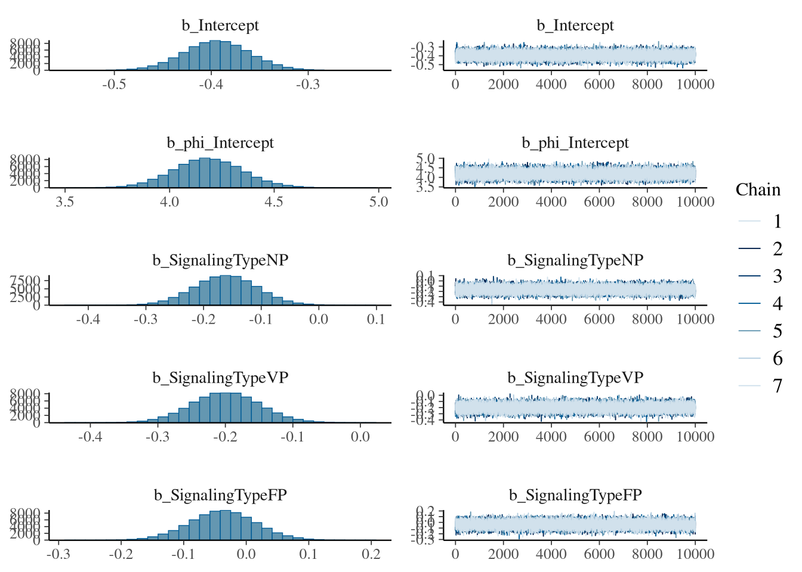
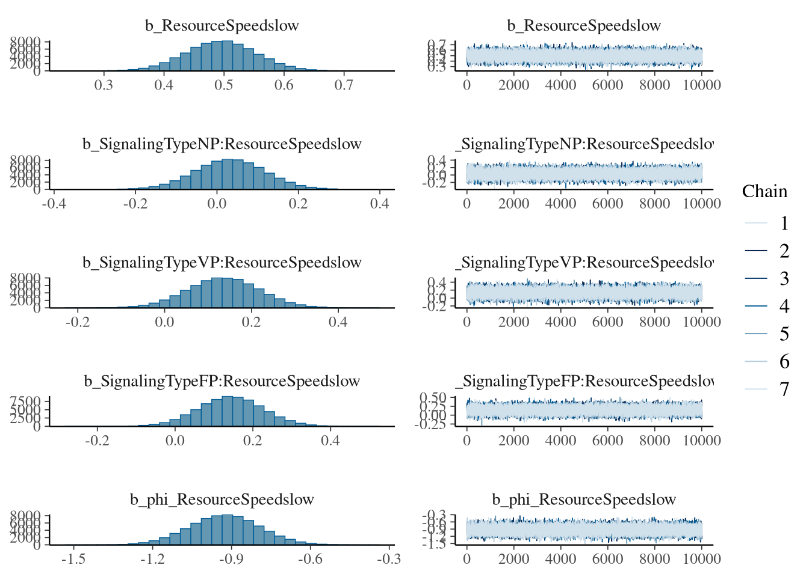
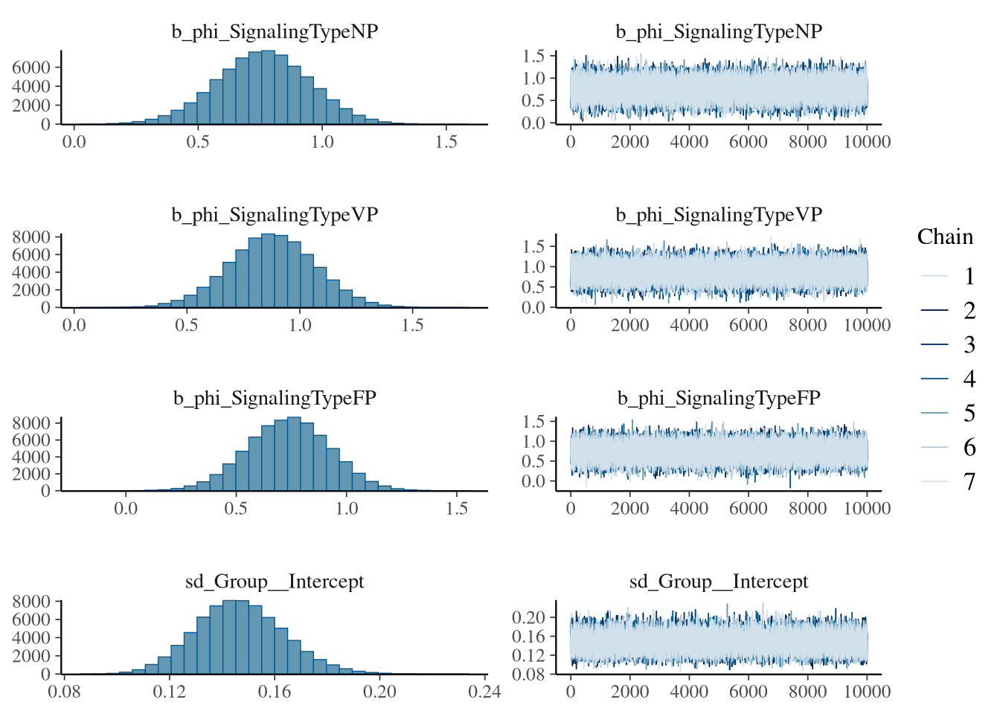
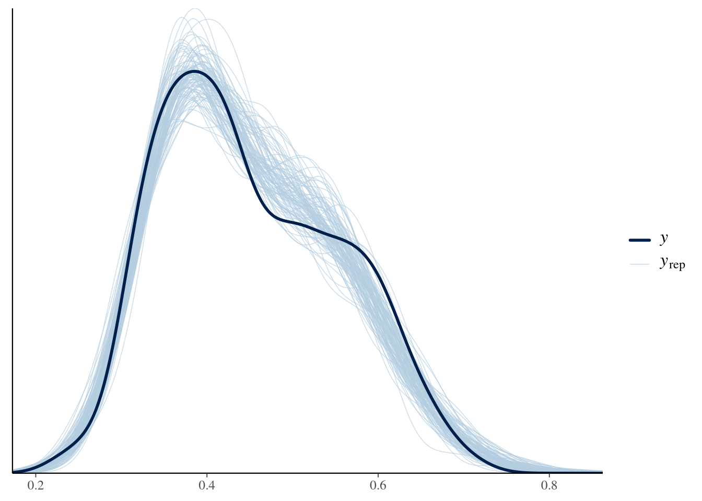
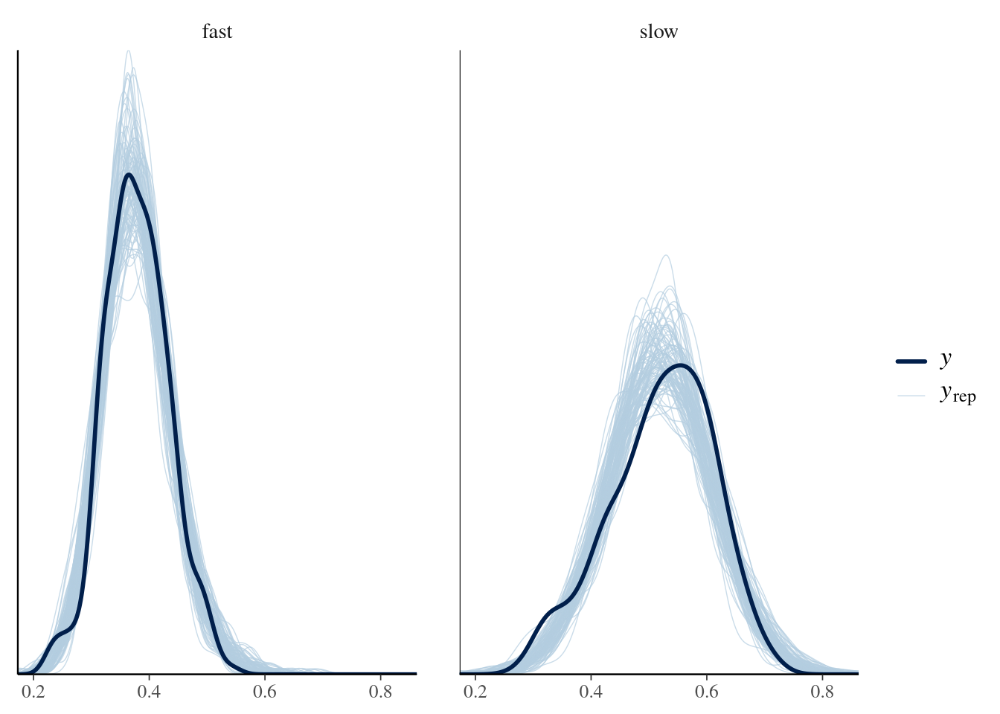
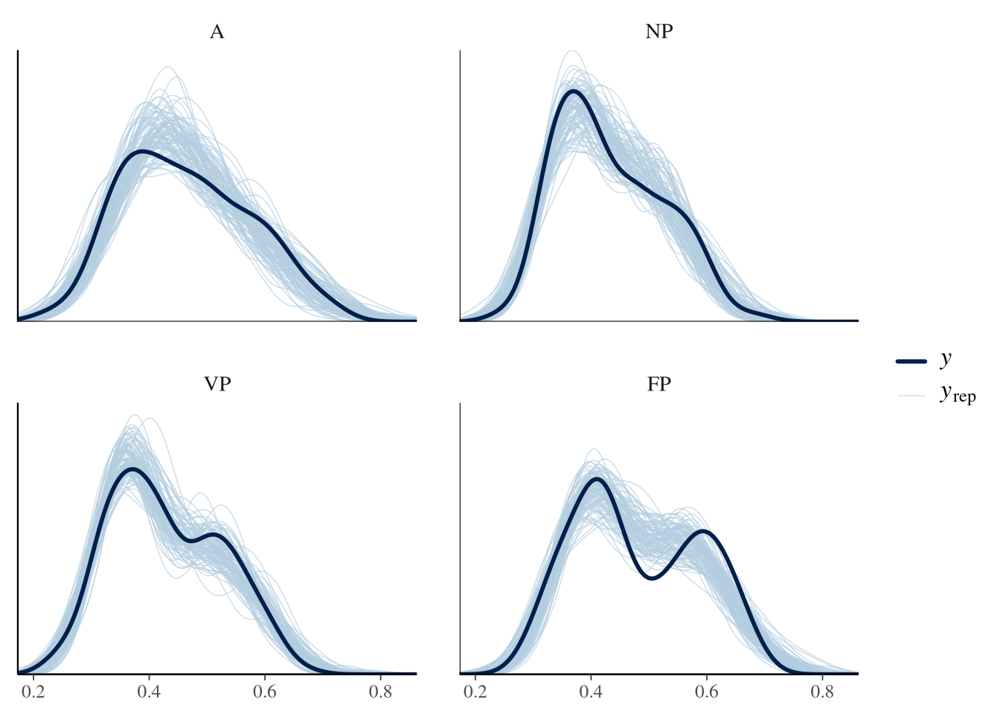
group <- m.PCR.data$SignalingType
mask <- m.PCR.data$ResourceSpeed == 'fast'
ppc_dens_overlay_grouped(m.PCR.2.y[mask],
m.PCR.2.yrep[1:50, mask],
group = group[mask])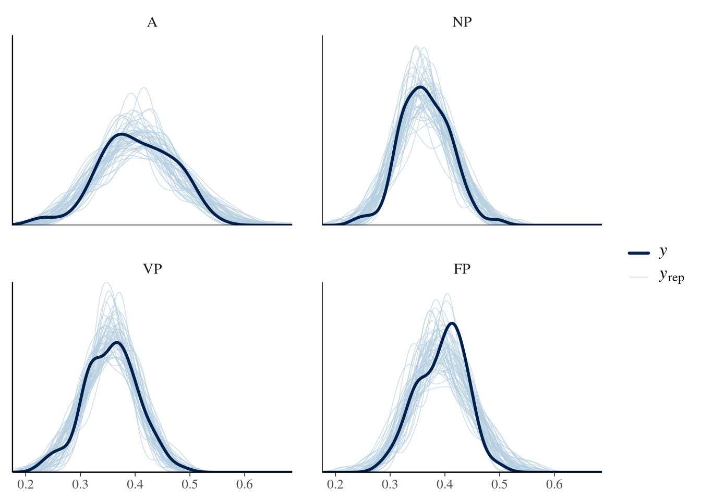
group <- m.PCR.data$SignalingType
mask <- m.PCR.data$ResourceSpeed == 'slow'
ppc_dens_overlay_grouped(m.PCR.2.y[mask],
m.PCR.2.yrep[1:50, mask],
group = group[mask])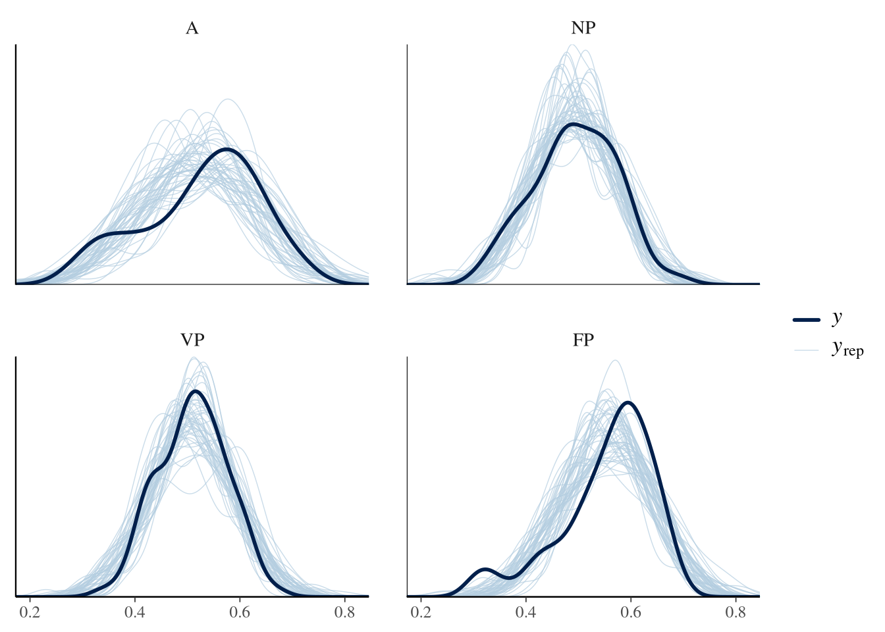
Condition comparisons
m.PCR.2.emmeans_contrast_draws.1 <- m.PCR.2.fit %>%
emmeans(~ SignalingType * ResourceSpeed, epred = TRUE, type = "response", re_formula = m.PCR.2.formula_comparison) %>%
contrast(method = "revpairwise", simple = "each", combine = TRUE) %>%
gather_emmeans_draws() %>%
mutate(.value = .value * theoretical_max)m.PCR.2.comparison.1 <- m.PCR.2.emmeans_contrast_draws.1 %>%
ggdist::mean_hdci(.width = 0.9) %>%
mutate(.value = round(.value, 2), .lower = round(.lower, 2), .upper = round(.upper, 2))
m.PCR.2.comparison.1 %>%
knitr::kable("html", digits = 2) %>% kable_classic(full_width = T, position = "center", )| ResourceSpeed | SignalingType | contrast | .value | .lower | .upper | .width | .point | .interval |
|---|---|---|---|---|---|---|---|---|
| . | A | slow - fast | 4.90 | 3.95 | 5.85 | 0.9 | mean | hdci |
| . | FP | slow - fast | 6.31 | 5.34 | 7.29 | 0.9 | mean | hdci |
| . | NP | slow - fast | 5.14 | 4.12 | 6.13 | 0.9 | mean | hdci |
| . | VP | slow - fast | 6.14 | 5.19 | 7.08 | 0.9 | mean | hdci |
| fast | . | FP - A | -0.36 | -1.21 | 0.46 | 0.9 | mean | hdci |
| fast | . | FP - NP | 1.17 | 0.25 | 2.09 | 0.9 | mean | hdci |
| fast | . | FP - VP | 1.52 | 0.64 | 2.37 | 0.9 | mean | hdci |
| fast | . | NP - A | -1.53 | -2.37 | -0.68 | 0.9 | mean | hdci |
| fast | . | VP - A | -1.88 | -2.64 | -1.09 | 0.9 | mean | hdci |
| fast | . | VP - NP | -0.35 | -1.23 | 0.52 | 0.9 | mean | hdci |
| slow | . | FP - A | 1.05 | -0.02 | 2.16 | 0.9 | mean | hdci |
| slow | . | FP - NP | 2.34 | 1.25 | 3.38 | 0.9 | mean | hdci |
| slow | . | FP - VP | 1.69 | 0.63 | 2.73 | 0.9 | mean | hdci |
| slow | . | NP - A | -1.29 | -2.38 | -0.16 | 0.9 | mean | hdci |
| slow | . | VP - A | -0.64 | -1.73 | 0.46 | 0.9 | mean | hdci |
| slow | . | VP - NP | 0.65 | -0.42 | 1.72 | 0.9 | mean | hdci |
m.PCR.2.emmeans_contrast_draws.1 %>%
filter(ResourceSpeed != '.') %>%
rename(prediction = .value) %>%
ggplot(
aes(y = contrast,
x = prediction,
color = ResourceSpeed, shape = ResourceSpeed, fill = ResourceSpeed)) +
facet_grid(rows = vars(ResourceSpeed)) +
stat_pointinterval(.width = 0.9) +
scale_color_manual(values = get_colors("Qual2", num.colors = 2, reverse = TRUE, gradient = FALSE)) +
scale_fill_manual(values = get_colors("Qual2", num.colors = 2, reverse = TRUE, gradient = FALSE)) +
scale_shape_manual(values = c(21, 24)) +
labs(x = 'Prediction PCS') +
geom_vline(aes(xintercept=0), linetype="longdash") +
theme_nice()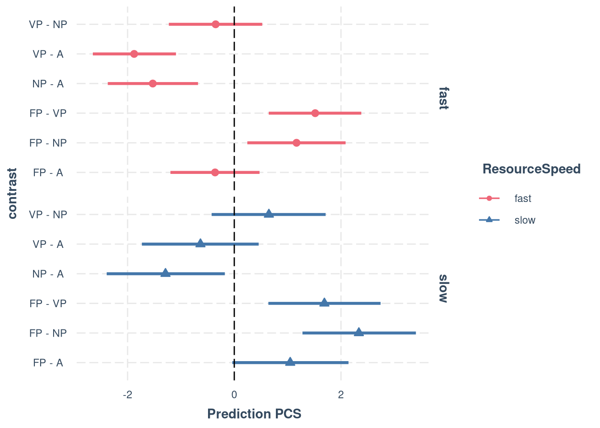
m.PCR.2.emmeans_contrast_draws.2 <- m.PCR.2.fit %>%
emmeans(~ ResourceSpeed, epred = TRUE, type = "response", re_formula = m.PCR.2.formula_comparison) %>%
contrast(method = "revpairwise", simple = "each", combine = TRUE) %>%
gather_emmeans_draws() %>%
mutate(.value = .value * theoretical_max)m.PCR.2.comparison.2 <- m.PCR.2.emmeans_contrast_draws.2 %>%
ggdist::mean_hdci(.width = 0.9) %>%
mutate(.value = round(.value, 2), .lower = round(.lower, 2), .upper = round(.upper, 2))
m.PCR.2.comparison.2 %>%
knitr::kable("html", digits = 2) %>% kable_classic(full_width = T, position = "center", )| contrast | .value | .lower | .upper | .width | .point | .interval |
|---|---|---|---|---|---|---|
| slow - fast | 5.62 | 5.13 | 6.11 | 0.9 | mean | hdci |
m.PCR.2.comparison.combined_table <- bind_rows(
m.PCR.2.comparison.2,
m.PCR.2.comparison.1
) %>%
select(ResourceSpeed, SignalingType, contrast, .value, .lower, .upper) %>%
mutate(
ResourceSpeed = ifelse(is.na(ResourceSpeed), ".", as.character(ResourceSpeed)),
SignalingType = ifelse(is.na(SignalingType), ".", as.character(SignalingType)),
sig = (.lower * .upper) > 0,
Estimate = sprintf("%.2f", .value),
Estimate = ifelse(sig, paste0("\\textbf{", Estimate, "}"), Estimate),
hpdi = sprintf("[%.2f, %.2f]", .lower, .upper),
hpdi = ifelse(sig, paste0("\\textbf{", hpdi, "}"), hpdi)
) %>%
select(ResourceSpeed, SignalingType, contrast, Estimate, hpdi)
# (Optional) Rename columns for publication
colnames(m.PCR.2.comparison.combined_table) <- c(
"Resource Speed", "Payoff Condition", "Contrast", "Mean", "90\\% HPDI"
)
kbl <- kable(
m.PCR.2.comparison.combined_table,
format = "latex",
booktabs = TRUE,
align = c("l", "l", "l", "r", "r"),
caption = "Posterior Estimates Point Collection Rate",
escape = FALSE
) %>%
kable_styling(latex_options = "hold_position") %>%
row_spec(0, bold = TRUE)
unique_speeds <- unique(m.PCR.2.comparison.combined_table$`Resource Speed`)
start <- 1
for (speed in unique_speeds) {
n_rows <- sum(m.PCR.2.comparison.combined_table$`Resource Speed` == speed)
if (speed != ".") {
kbl <- group_rows(kbl, speed, start, start + n_rows - 1)
}
start <- start + n_rows
}
writeLines(kbl, paste0(comparisons, "pcr_2_comparison_combined.tex"))Model Comparison
m.PCR.1.loo_model <- loo(m.PCR.1.fit, moment_match = F, reloo = F, draws = 1000)
m.PCR.2.loo_model <- loo(m.PCR.2.fit, moment_match = F, reloo = F, draws = 1000)##
## Computed from 70000 by 621 log-likelihood matrix.
##
## Estimate SE
## elpd_loo 616.5 6.5
## p_loo 3.6 0.2
## looic -1233.0 13.1
## ------
## MCSE of elpd_loo is 0.0.
## MCSE and ESS estimates assume MCMC draws (r_eff in [0.9, 1.8]).
##
## All Pareto k estimates are good (k < 0.7).
## See help('pareto-k-diagnostic') for details.##
## Computed from 70000 by 621 log-likelihood matrix.
##
## Estimate SE
## elpd_loo 847.9 21.2
## p_loo 102.0 6.4
## looic -1695.8 42.4
## ------
## MCSE of elpd_loo is NA.
## MCSE and ESS estimates assume MCMC draws (r_eff in [0.4, 2.2]).
##
## Pareto k diagnostic values:
## Count Pct. Min. ESS
## (-Inf, 0.7] (good) 619 99.7% 2202
## (0.7, 1] (bad) 2 0.3% <NA>
## (1, Inf) (very bad) 0 0.0% <NA>
## See help('pareto-k-diagnostic') for details.## elpd_diff se_diff elpd_loo se_elpd_loo p_loo se_p_loo looic se_looic
## m.PCR.2.fit 0.000 0.000 847.922 21.207 101.963 6.445 -1695.844 42.414
## m.PCR.1.fit -231.435 16.536 616.487 6.544 3.584 0.235 -1232.974 13.088